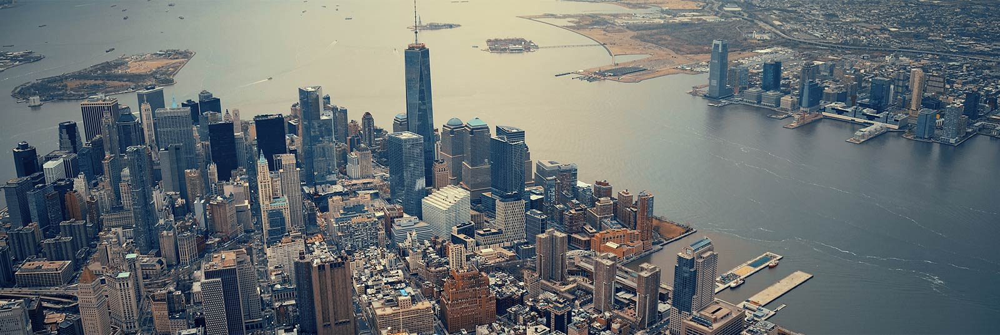

Nueva York es una ciudad y municipio de USA
Nueva York es una ciudad y municipio de USA
Nueva York (en inglés: New York City) es la ciudad más poblada del estado homónimo y de los Estados Unidos de América, y la segunda mayor concentración urbana del continente americano, después de la Ciudad de México. La ciudad de Nueva York está entre las aglomeraciones urbanas más grandes y pobladas del mundoÑ.
Desde finales del siglo XIX es uno de los principales centros de comercio y finanzas del mundo. Nueva York está considerada como ciudad global, por sus influencias a nivel mundial en los medios de comunicación, en la política, en la educación, en el entretenimiento, las artes y la moda. La influencia artística y cultural de la ciudad es de las más fuertes del mundo. En esta ciudad se encuentra la sede central de la Organización de las Naciones Unidas, lo que también la convierte en un importante punto de las relaciones internacionales. La enorme relevancia de la ciudad a todos los niveles la convierte,juntamente con Londres, Tokio y París, en una de las ciudades más destacadas e influyentes del planeta.
La ciudad se compone de cinco boroughs (a veces traducido como 'condado', 'distrito' o 'comuna') cada uno de los cuales coincide con un condado: Bronx, Brooklyn, Manhattan, Queens, y Staten Island. Con más de 8,4 millones de neoyorquinos en un área urbana de 830 kilómetros cuadrados (320 mi²), Nueva York es la segunda ciudad con más densidad de población de los Estados Unidos, detrás de Union City, Nueva Jersey, localizada al otro lado del río Hudson
La ciudad tiene muchos lugares y edificios reconocidos por todo el mundo. Por ejemplo, la estatua de la Libertad, ubicada en la isla homónima, y la isla de Ellis, que recibió a millones de inmigrantes que llegaban a Estados Unidos a finales del siglo XIX y comienzos del XX. Wall Street ha sido uno de los principales centros mundiales de finanzas desde la Segunda Guerra Mundial y es la sede de la Bolsa de Nueva York. La ciudad también ha concentrado a muchos de los edificios más altos del mundo, entre los que se encuentran el edificio Empire State y las torres gemelas del World Trade Center, que fueron derribadas en los atentados del 11 de septiembre de 2001.
La ciudad también es la cuna de muchos movimientos culturales estadounidenses, como por ejemplo el renacimiento de Harlem en literatura y artes visuales, el expresionismo abstracto (también conocido como Escuela de Nueva York) en pintura, y hip hop,9 punk y Tin Pan Alley en música. En 2005, se hablaban casi 170 idiomas en la ciudad, y el 36 % de su población había nacido fuera de los Estados Unidos.1011 Con su metro en funcionamiento las 24 horas del día, el movimiento de tráfico y gente es constante.
Nueva York está ubicada en el noreste de Estados Unidos, en el sureste del estado homónimo y aproximadamente a mitad de distancia entre Washington D. C. y Boston.28 Su ubicación en la boca del río Hudson que forma un amplio puerto natural protegido que desemboca en el océano Atlántico, ha ayudado al crecimiento de la ciudad y a su importancia como ciudad comercial. La mayor parte de Nueva York se asienta sobre tres islas: Manhattan, Staten Island y Long Island, haciendo que el terreno edificable sea escaso y generando así una alta densidad de población.
 Esto es un enlace a la